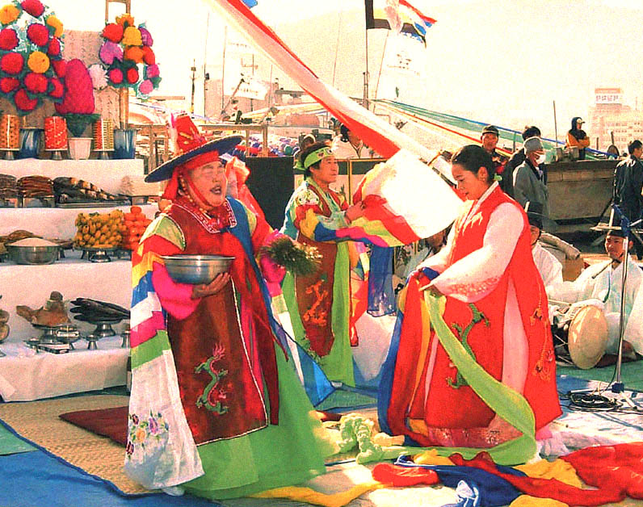

무당이 되는 길
대한민국에서 무당이 되는 길은 보통 두 가지로 나뉜다.
하나는 대대로 무속을 이어받는 세습무이고, 다른 하나는 신병을 겪고 신내림을 통해 무당이 되는 강신무다.
하나는 대대로 무속을 이어받는 세습무이고, 다른 하나는 신병을 겪고 신내림을 통해 무당이 되는 강신무다.

세습무
세습무는 부모가 무당이면 자식도 자연스레 그 길을 따르며,
주로 마을 공동체의 신앙을 유지하는 역할도 했다.
주로 마을 공동체의 신앙을 유지하는 역할도 했다.
강신무
반면 강신무는 원하지 않아도 이상한 병이나 기이한 현상을
겪으며 무당이 될 팔자에 따라 신을 모시게 된다.
겪으며 무당이 될 팔자에 따라 신을 모시게 된다.
그렇게 신내림을 받은 강신무는 '신어머니'나 '신아버지'라 불리는 선배 무당에게서 굿과 무속 의례를 배운다.
처음에는 '애동'이라 불리며 견습 무당으로 활동하고, 점차 의식을 주관하는 무당으로 성장한다.
이미지 클릭 - 영상 이동
그러나 실제로는 신을 모실 팔자가 아닌데도,
불안한 마음을 이용해 고액의 굿비를 요구하는 사기성 내림굿도 많아 주의가 필요하다.